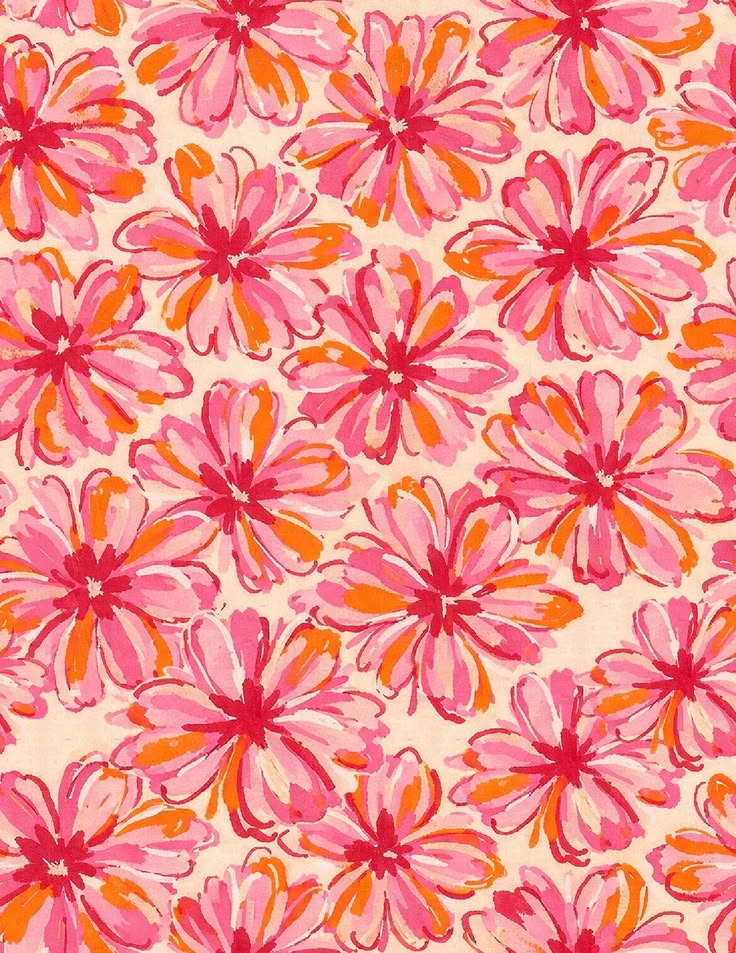
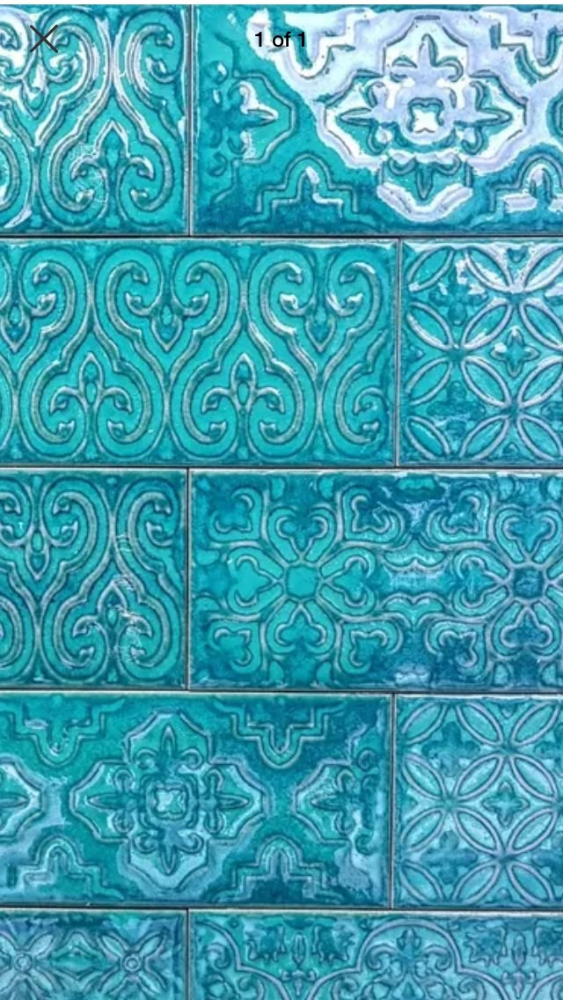
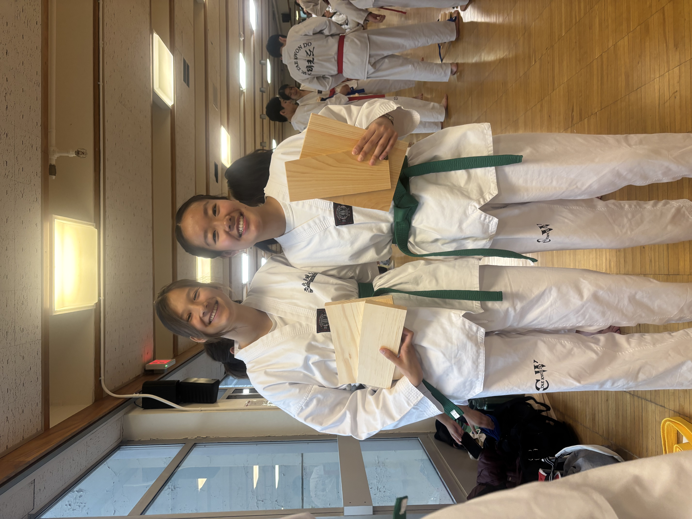
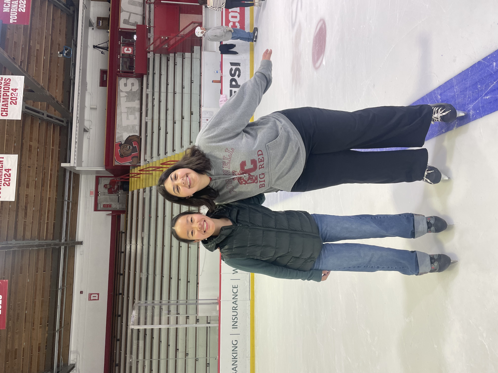
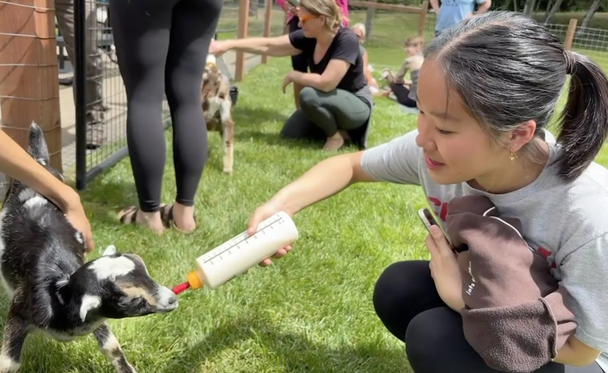
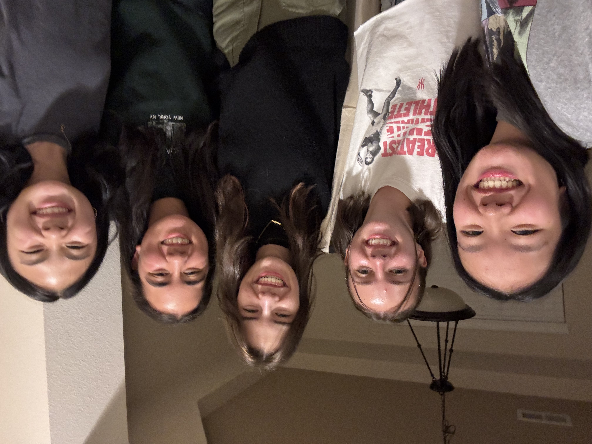
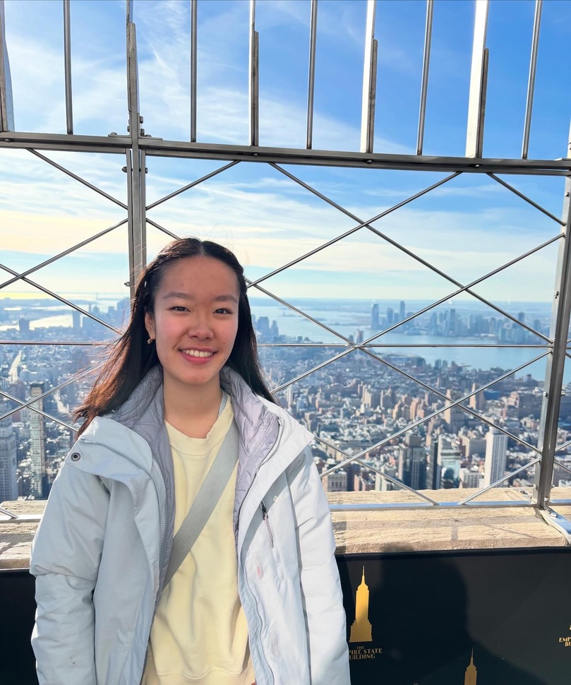

Hi there! I'm Willow.
I'm a
I'm a Computer Science & English student at Cornell University interested in product management, user experience, and building tech that brings people together. To me, I view engineering and the humanities as two sides of the same coin: code builds the mechanics, while storytelling and human empathy give it purpose. I love taking messy, complex problems and turning them into simple, thoughtful digital tools. When I'm not coding, designing, or writing, you can find me practicing taekwondo with my college's club team, taking long walks, or curating yet another playlist on Spotify...


A glimpse into my world ✦

cornell taekwondo 🥋 library hopping 📖
library hopping 📖

rink sidequesting ⛸️
feeding baby goats 🍼
my bestest of friends 🫂
my 1st time in nyc! 🗽